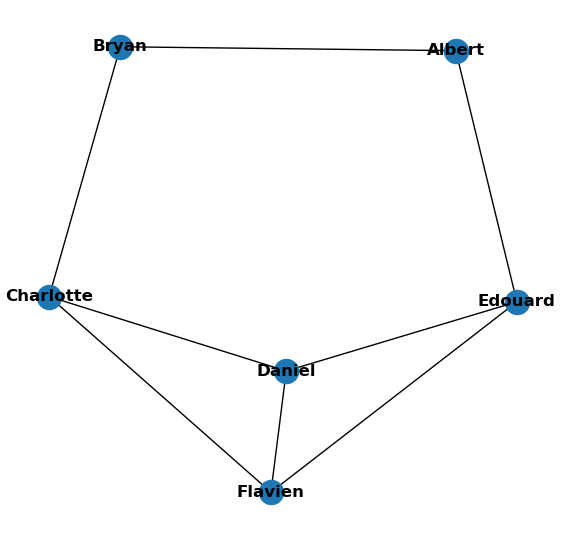
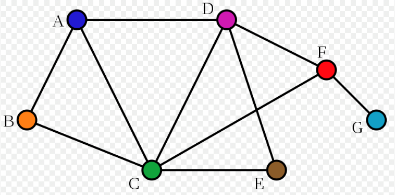
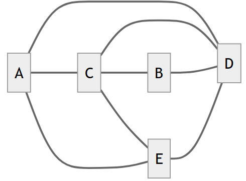
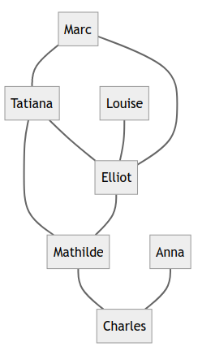
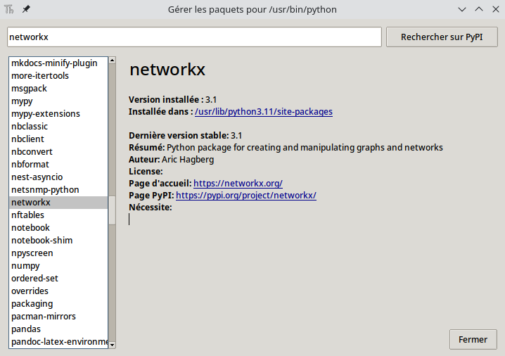
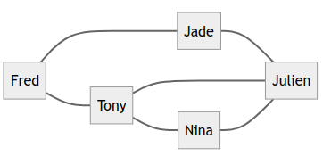

Sources
Activité - Modéliser un réseau social¶
Exercices¶
Activité notée
Cette activité sera notée sur 10 points. Une autre activité sera réalisée plus tard pour obtenir une note sur 20 points. Répondez aux questions ci-dessous sur une feuille que vous me rendrez. N'oubliez pas de mettre votre nom, votre prénom et votre classe !
Voici un graphe illustrant un réseau social ayant 6 abonnés (A, B, C, D, E et F) tel que :
- A est ami avec B, C et D
- B est ami avec A et D
- C est ami avec A, E et D
- D est ami avec tous les autres abonnés
- E est ami avec C, D et F
- F est ami avec E et D
Les cercles sont appelés des sommets et les segments de droites des arêtes.

Vocabulaire
Chaîne : Dans un graphe, une chaîne reliant un sommet x à un sommet y est définie par une suite finie d'arêtes consécutives, reliant x à y.
Exemple : Dans le graphe donné ci-dessus, A-D-E-C est une chaîne de 3 arêtes
Distance entre 2 sommets : La distance entre deux sommets d'un graphe est le nombre minimum d'arêtes d'une chaîne allant de l'un à l'autre.
Exemple : La distance entre le sommet A et le sommet F est de 2 (chaîne A-D-F).
Écartement : L'écartement d'un sommet est la distance maximale existant entre ce sommet et les autres sommets du graphe.
Exemple : distance (A-B) = 1 ; distance (A-C) = 1 ; distance (A-D) = 1 ; distance (A-E) = 2 ; distance (A-F) = 2 ; nous pouvons donc dire que la distance maximale existant entre le sommet A et les autres sommets du graphe est de 2 (distance (A-E) et distance (A-F)). Nous pouvons donc dire que l'écartement de A est de 2.
Centre : On appelle centre d'un graphe, le sommet d'écartement minimal (le centre n'est pas nécessairement unique).
Exemple : Dans le graphe 1 tous les sommets ont un écartement de 2 à l'exception du sommet D qui a un écartement de 1, nous pouvons donc affirmer que le centre du graphe 1 est le sommet D.
Rayon : On appelle rayon d'un graphe G, l'écartement d'un centre de G.
Exemple : D a un écartement de 1, c'est le centre du graphe, nous pouvons donc dire que le rayon du graphe est de 1.
Diamètre : On appelle diamètre d'un graphe G, la distance maximale entre deux sommets du graphe G.
Exemple : Dans le graphe 1 la distance maximale entre 2 sommets est de 2, nous pouvons donc dire que le diamètre du graphe est de 2.
Exercice 1
- En utilisant le graphe présenté précédemment, répondre aux consignes suivantes :
- Donner une chaine de ce graphe composée de 4 arêtes et une chaine de 5 arêtes.
- Déterminer la distance entre le sommet C et B et la distance entre le sommet B et E.
- Déterminer l’écartement de D ainsi que l’écartement de E.
Réponse exercice 1
-
Chaîne de 4 arêtes : B-A-D-F-E, ou encore B-A-C-E-F...
Chaîne de 5 arêtes : F-E-C-A-B-D, ou encore B-D-F-E-C-A... -
La distance entre C et B est de 2 arêtes (c'est le plus petit nombre d'arêtes qui les sépare), et la distance entre B et E est également de 2 arêtes.
-
L'écartement de D est de 1 (car sa distance avec tous les autres sommets est de 1), et l'écartement de E est de 2.
Exercice 2
Construire un graphe d’un réseau social à partir des informations suivantes :
- Albert est ami avec Bryan et Edouard
- Bryan est ami avec Albert et Charlotte
- Charlotte est ami avec Bryan, Flavien et Daniel
- Daniel est ami avec Charlotte, Flavien et Edouard
- Edouard est ami avec Albert, Daniel et Flavien
- Flavien est ami avec Charlotte, Daniel et Edouard
(Vous pouvez utiliser des lettres de A à F si vous préférez.)
Réponse exercice 2
Voici le graphe obtenu (on peut le représenter différemment, tant qu'il contient les mêmes sommets et les mêmes arêtes) :

Ce graphe contient :
- 6 sommets
- 8 arêtes
- Centres du graphe : 'Albert', 'Bryan', 'Edouard', 'Charlotte', 'Flavien' et 'Daniel' sont tous des centres, car ils ont tous le même écartement (qui est de 2).
- Diamètre du graphe : 2 (car la distance maximale entre deux sommets est de 2)
Exercice 3
Déterminer le (ou les) centre(s) du graphe ci-dessous.
En déduire son rayon et son diamètre.

Réponse exercice 3
Centres du graphe
Pour déterminer le centre du graphe, regardons d'abord l'écartement de chaque sommet :
- A a un écartement de 3,
- B a un écartement de 3,
- C a un écartement de 2,
- D a un écartement de 2,
- E a un écartement de 3,
- F a un écartement de 2,
- G a un écartement de 3.
Les centres du graphe sont les sommets d'écartement minimal. Ici, les trois sommets ayant l'écartement le plus petit (qui est de 2) sont : C, D et F.
Rayon :
Le rayon est l'écartement d'un centre du graphe.
Les centres de ce graphe ont pour écartement 2, donc le rayon est de 2.
Diamètre :
Le diamètre est la distance maximale entre deux sommets du graphe. Ici, les sommets les plus éloignés entre eux ont une distance de 3, donc le diamètre est de 3.
Un tableau d'adjacence est un tableau à double entrée où chaque case contient 1 si les sommets sont liés par une arête, et 0 sinon.
Exemple :

| Adjacence | A | B | C | D | E |
|---|---|---|---|---|---|
| A | 0 | 0 | 1 | 1 | 1 |
| B | 0 | 0 | 1 | 1 | 0 |
| C | 1 | 1 | 0 | 1 | 1 |
| D | 1 | 1 | 1 | 0 | 1 |
| E | 1 | 0 | 1 | 1 | 0 |
Exercice 4
Voici un graphe :

a. Combien y a t-il d'arêtes et de sommets dans ce graphe ?
b. Complétez le tableau d'adjacence de ce graphe :
| Adjacence | Anna | Charles | Elliot | Louise | Mathilde | Marc | Tatiana |
|---|---|---|---|---|---|---|---|
| Anna | |||||||
| Charles | |||||||
| Elliot | |||||||
| Louise | |||||||
| Mathilde | |||||||
| Marc | |||||||
| Tatiana |
c. Déterminer le diamètre et le(s) centre(s) du graphe.
Réponse exercice 4
a. Il y a 8 arêtes et 7 sommets dans ce graphe.
b. Voici le tableau d'adjacence obtenu :
| Adjacence | Anna | Charles | Elliot | Louise | Mathilde | Marc | Tatiana |
|---|---|---|---|---|---|---|---|
| Anna | 0 | 1 | 0 | 0 | 0 | 0 | 0 |
| Charles | 1 | 0 | 0 | 0 | 1 | 0 | 0 |
| Elliot | 0 | 0 | 0 | 1 | 1 | 1 | 1 |
| Louise | 0 | 0 | 1 | 0 | 0 | 0 | 0 |
| Mathilde | 0 | 1 | 1 | 0 | 0 | 0 | 1 |
| Marc | 0 | 0 | 1 | 0 | 0 | 0 | 1 |
| Tatiana | 0 | 0 | 1 | 0 | 1 | 1 | 0 |
c. La distance maximale entre 2 sommets est de 4 arêtes : Donc le diamètre est de 4.
Visionnez les 12 premières minutes de la vidéo suivante :
Exercice 5 - Questions sur la vidéo
- Décrire le premier modèle théorique introduit par Paul Erdös pour simuler un réseau social.
Quelle est la première propriété mise en évidence par ce modèle ? - En vous aidant de la page wikipedia, décrire l'expérience de Stanley Milgram du « petit monde ».
- Quelle(s) critique(s) majeure(s) peux-on émettre sur l'étude menée ?
- Quel est le réseau social étudié par Duncan Watts ? Quelle est la longueur moyenne du chemin entre deux acteurs ?
- Quel effet a l’utilisation des plateformes de réseaux sociaux sur les degrés de séparation ?
- Quelle seconde propriété des réseaux sociaux a été identifiée par Duncan Watts ?
-
Albert Lazlo Barabasi constate que les réseaux sociaux font aussi apparaitre des Hubs (également appelés clusters) faisant le lien entre différentes sous-communautés :
- Donner d'autres exemples de réseaux qui exhibent cette propriété.
- Quelle est la justification proposée par Barabasi d'une telle organisation ?
-
Donner les caractéristiques identifiés par l'auteur pour le réseau social formé des amateurs de sciences sur Twitter (la valeur du degré de séparation, quelques sous-communautés et des hubs).
- D'après vous, quels peuvent être les conséquences de ces regroupements sur les réseaux sociaux ?
Réponse exercice 5
-
Le premier modèle théorique introduit par Paul Erdős pour simuler un réseau social est un modèle de graphes aléatoires. Ce modèle suppose que chaque paire d'individus dans un réseau social a une probabilité fixe et indépendante de former une connexion.
La première propriété* mise en évidence est celle des 6 degrés de séparation : il s'agit de l'idée selon laquelle chaque individu sur le globe est relié à tout autre individu par une chaîne de relations individuelles comprenant au plus cinq autres maillons**. -
L'expérience du "petit monde" de Stanley Milgram a été menée en 1967. Dans cette expérience, Milgram a demandé à des participants de Omaha au Nebraska d'envoyer des lettres à des personnes situées à Boston, en utilisant uniquement des connaissances personnelles et des contacts intermédiaires. L'objectif était de voir combien d'étapes intermédiaires étaient nécessaires pour que la lettre atteigne la personne cible.
-
Les critiques majeures de cette étude sont les suivantes :
-
Le nombre de lettres qui ont effectivement atteint la cible était assez faible, remettant en question la validité de l'expérience.
-
Les expériences conduites sur de larges populations plutôt que sur des groupes restreints et habitués à collaborer ont apporté un taux de succès si faible que les résultats n'ont pas été publiés.
-
-
Duncan Watts a étudié le réseau social des acteurs hollywoodiens. Il a découvert que la longueur moyenne du chemin entre deux acteurs était beaucoup plus courte que prévu, d'environ 3,6 personnes (donc 3,6 arêtes), montrant ainsi la notion de "petit monde" dans ce réseau.
-
L'utilisation des plateformes de réseaux sociaux a réduit le nombre de degrés de séparation. Elle serait d'environ 4 intermédiaires, voire 3 si les individus résident dans le même pays.
-
La seconde propriété des réseaux sociaux identifiée par Duncan Watts est la présence de regroupements d'individus d'une même communauté. Il existe beaucoup de liens au sein d'une même communauté, mais beaucoup moins entre les différentes communautés.
-
- On peut citer comme exemples d'autres réseaux : - le réseau de la musique : une personne faisant partie d'une communauté de jazz par exemple connaît toutes les autres personnes de sa commuanuté, mais peut également connaître celles de la communauté du rock par exemple, et ainsi faire le lien entre plusieurs communautés (ce qui en ferait un hub). - les réseaux de transport aérien, où certains aéroports majeurs servent de hubs reliant différentes régions du monde. - les réseaux de citation académique, avec des articles influents servant de hubs reliant différentes sous-disciplines.
- La justification d'une telle organisation par Barbasi est qu'un grand nombre de personnes possède peu d'amis mais q'un nombre plus réduit de personnes possède beaucoup d'amis.
-
Selon Albert-László Barabási, le réseau social formé par les amateurs de sciences sur Twitter a les caractéristiques suivantes :
- La valeur du degré de séparation est généralement courte (3,5 degrés entre chaque individu en moyenne), ce qui signifie que les utilisateurs sont relativement proches les uns des autres en termes de connexions.
- Il existe plusieurs sous-communautés d'amateurs de sciences sur Twitter, chacune ayant ses propres centres d'intérêt et discussions : les sceptiques, les chercheurs, les institutions culturelles scientifiques...
- Des hubs influents existent, comme des scientifiques bien connus ou des personnalités de la science, qui jouent un rôle clé dans la diffusion d'informations au sein du réseau.
-
Les regroupements au sein des réseaux sociaux peuvent avoir plusieurs conséquences :
- Ils favorisent la diffusion rapide d'informations au sein des sous-communautés.
- Ils peuvent renforcer l'homogénéité des opinions et des croyances au sein de ces sous-communautés, ce qui peut conduire à des bulles d'information.
- Ils peuvent contribuer à l'echo chamber en limitant l'exposition à des perspectives différentes, ce qui peut être préjudiciable pour la prise de décision éclairée.
Aller plus loin avec Python¶
(Cette partie ne compte pas dans les exercices notés.)
À télécharger
Télécharger le fichier suivant : graphe.py
À faire 1
- Ouvrir l'application Thonny
- Cliquer sur l'onglet
FichierpuisOuvrir. - Choisissez votre fichier
graphe.pypréalablement téléchargé. - Vous devez installer le module Python nommé networkx et le module nommé matplotlib. Pour cela, cliquez sur l'onglet
Outils, puisGérer les paquets, puis recherchez et installez les deux modules.  - Exécutez le script avec le bouton d'exécution (le bouton vert avec une flèche), ou en appuyant sur le bouton
F5du clavier. Observez ce qu'il se passe.
N'hésitez pas à jeter un oeil à cette présentation de Thonny pour en savoir plus sur son fonctionnement.
À faire 2
Tentez de modifier le code pour afficher le graphe suivant :
Vérifiez si le(s) centre(s) du graphe et son diamètre affichés par le programme (dans la console en bas à gauche) correspondent bien à ceux obtenus à l'exercice 4.
À faire 3
Modifiez le programme de manière à obtenir le graphe suivant :

Quels sont le(s) centre(s) du graphe et son diamètre affichés par le programme ?